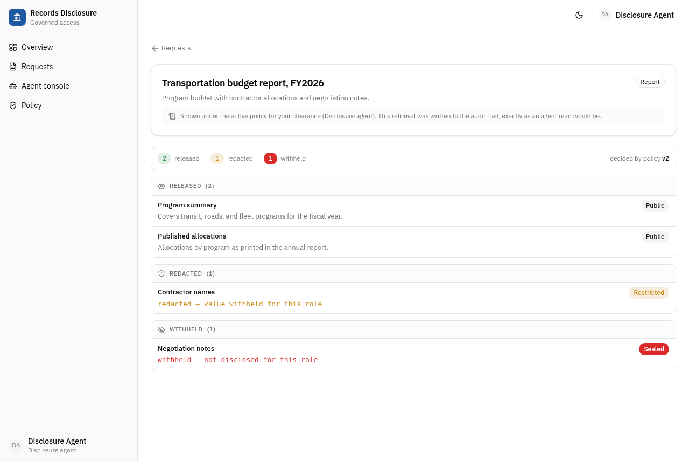
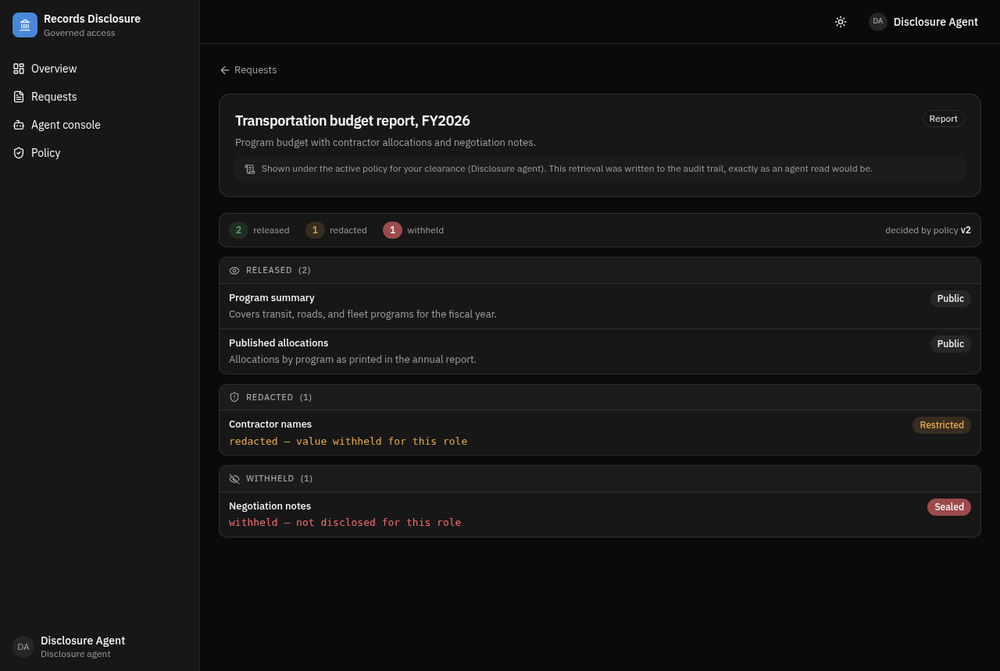

A human clerk and an AI agent call one shared rule to fetch a record. The same versioned policy decides which fields are released, redacted, or withheld, and every read is logged.


A record has fields of different sensitivity (public restricted sealed). A versioned policy maps each field's sensitivity and the caller's role to one action: release the value, redact it, or withhold it. That policy lives in one function, and both the human read endpoint and the AI agent endpoint call it. So a clerk asking by hand and an agent asking in plain language get the same, auditable answer. Withholding is computed in the API layer, never with row-level security.
The least-privileged caller. Sees public fields, and nothing sealed. It runs at this fixed clearance even when an admin triggers it.
Sees public and restricted fields; sealed fields are redacted. Opens requests and reads the audit trail.
Sees every field, and switches which policy version is active. One switch changes what every caller sees.
Clone it, deploy it, and open the link. It seeds itself, so there is data to read right away.
git clone https://github.com/xano-scratch/public-records-disclosure-api
cd public-records-disclosure-api
npm install
npx xanots login # once per machine
npm run xano:deploy # deploys the backend, seeds it, prints a live URLThen open the URL and click "Continue as Disclosure agent (AI)" to see the governance at work.
Clone and deploy this XanoTS template, then show me how its disclosure
policy decides which fields an AI agent may read versus a clerk:
https://github.com/xano-scratch/public-records-disclosure-api| Verb | Path | Who may call it | What it enforces |
|---|---|---|---|
| POST | auth/demo | public | mints a token for a seeded persona only |
| GET | requests | any signed in | request headers, filtered and paged |
| POST | requests | clerk, admin | opens a request; stamps the caller as owner |
| POST | records/retrieve | any signed in | governed read at the caller's role; logs a human access |
| POST | agent/retrieve | any signed in | agent resolves a record, reads at agent clearance, logs an agent access |
| GET | audit | clerk, admin | the full access trail |
| POST | rules/activate | admin | switches the active policy version |
Sixteen endpoints in all. The two retrievals are POST because each writes an audit row. Nothing public writes or mints a token for a real account.